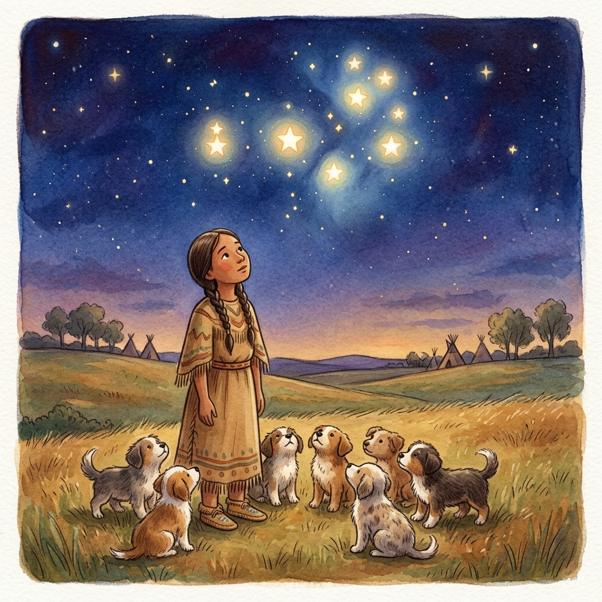

A chief had a fine-looking daughter. She had a great many admirers. At night she was visited by a young man, but she did not know who he was. She worried about this and determined to discover him. She put red paint near her bed. When he crawled on her bed, she put her hand into the paint. When they embraced, she left red marks on his back.
The next day she told her father to call all the young men to a dance in front of his tent. They all came, and the whole village turned out to see them. She watched all that came, looking for the red marks she had made. As she turned about, she caught sight of one of her father's dogs with red marks on his back. This made her so unhappy that she went straight into her tent. This broke up the dance.
The next day she went into the woods near the camp, taking the dog on a string. She hit him. He finally broke loose. She was very unhappy, and several months later she bore seven pups. She told her mother to kill them, but her mother was kind toward them and made a little shelter for them. They began to grow, and sometimes at night the old dog came to them. After a time, the woman began to take an interest in them and sometimes played with them. When they were big enough to run, the old dog came and took them away.
When the woman went to see them in the morning, they were gone. She saw the large dog's tracks and several little ones, and followed them at a distance. She was sad and cried. She returned to her mother and said, "Mother, make me seven pairs of moccasins. I am going to follow the little ones, searching for them." Her mother made seven pairs of moccasins, and the woman started out, tracking them all the way. Finally, in the distance, she saw a tent. The youngest one came to her and said, "Mother, Father wants you to go back. We are going home. You cannot come." She said, "No! Wherever you go, I go." She took the little one and carried him to the tent. She entered and saw a young man, who took no notice of her. He gave her a little meat and drink, which did not grow less no matter how much she ate. She tied the little pup to her belt with a string. Next morning, she was left alone and the tent had vanished. She followed the tracks and again came upon them. Four times this happened in the same way. But the fourth time the tracks stopped.
She looked up into the sky. There she saw her seven pups. They had become seven stars, the Pleiades.

From A. L. Kroeber's 1899 recordings of Cheyenne folklore.